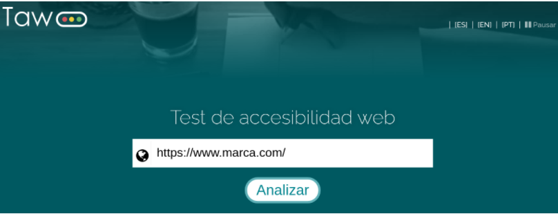
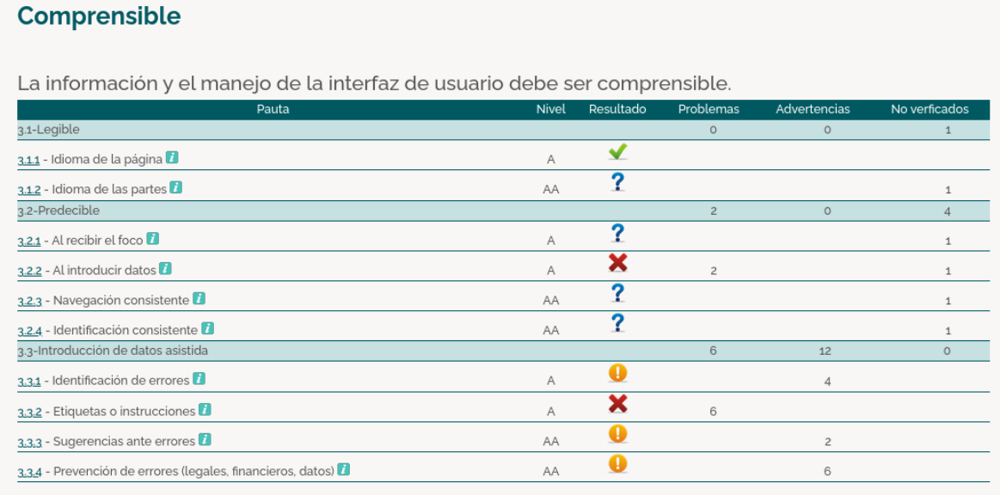
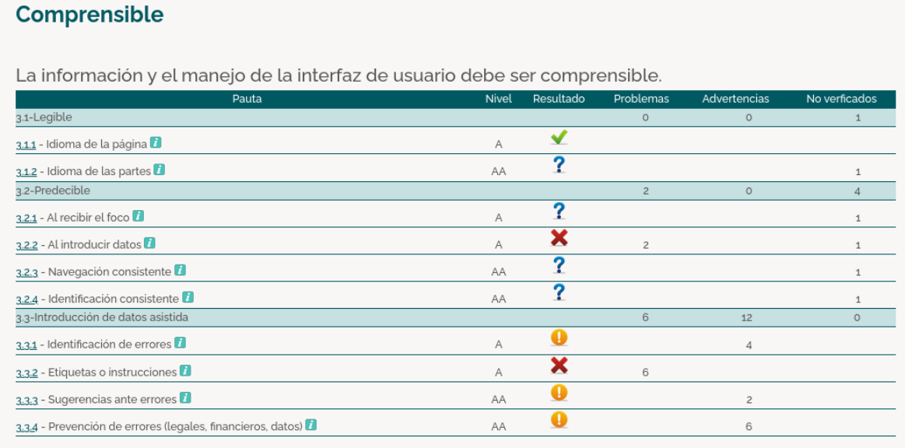
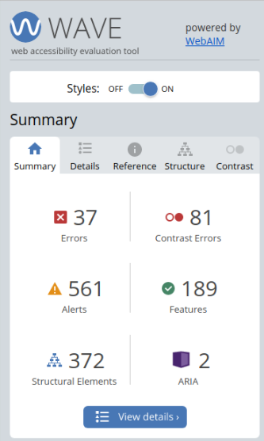
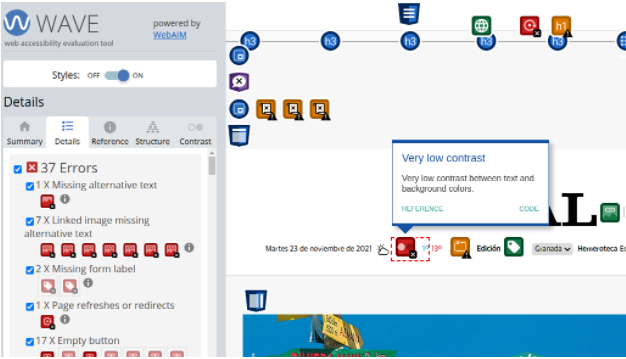
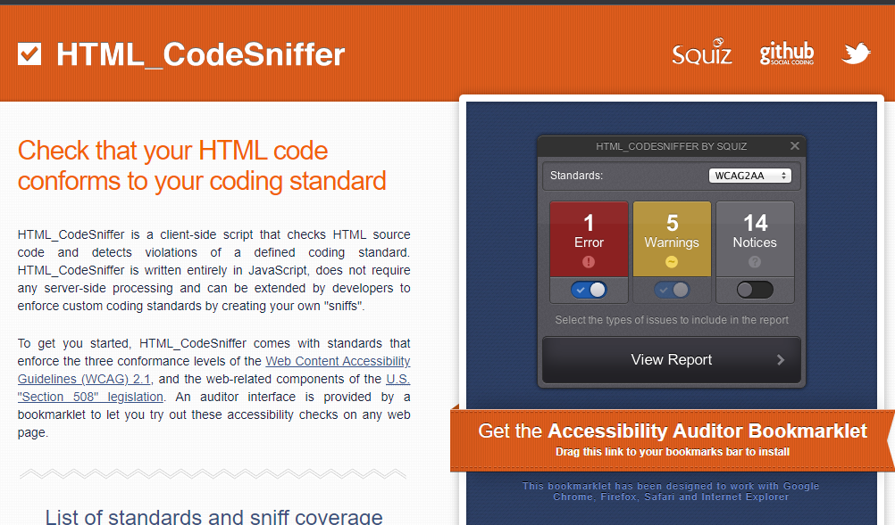
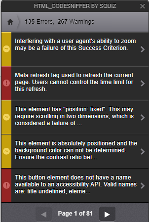
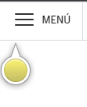
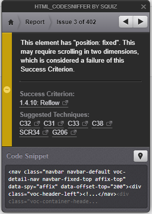

5.2.6 Herramientas de análisis de Accesibilidad Web
Tipos de herramientas
- Online
- Las que se llevan a cabo desde las páginas web.
- Plugins
- Para testear la accesibilidad, por ejemplo, a través de una extensión de google chrome.
- Locales
- Las que pueden hacerse desde programas. Nos permiten analizar la accesibilidad sin límites, personalizarlas mucho más e invocarlas desde otros programas.
TAW
Puedes acceder a TAW haciendo clic aquí
Herramienta que analiza cualquier url con sólo pulsar un botón. Es importante indicar el nivel de análisis. ya que por defecto el nivel es HTML y CSS. Está actualizado a la versión WCAG 2.0.
 

Wave Evaluation Tool
Puedes descargar Wave Evaluation Tool haciendo clic aquí
 HTMLCodeSniffer
HTMLCodeSniffer lo podemos descargar aquí
Al iniciarlo nos aparecerán los errores, las alertas y las advertencias

Si le damos clic en View Report, podremos ver una visión detallada de los resultados, si hacemos clic en uno nos aparecerá la información del error con un indicador señalando donde se encuentra.
  